Présentation du Projet : Ce projet vise à automatiser le chronométrage de la piste de robots suiveurs de ligne. Le système repose sur une architecture distribuée de trois modules ESP32 : deux balises (Départ et Arrivée) équipées de capteurs laser et un contrôleur central.
Pour garantir une précision optimale, la communication entre les modules utilise le protocole ESP-NOW. Le contrôleur central assure trois fonctions clés : l'identification des étudiants par RFID, le chronométrage autonome et l'hébergement d'une interface web permettant de visualiser les temps et le classement en temps réel. Les données sont stockées localement via LittleFS pour assurer leur persistance.
Pour garantir une précision optimale, la communication entre les modules utilise le protocole ESP-NOW. Le contrôleur central assure trois fonctions clés : l'identification des étudiants par RFID, le chronométrage autonome et l'hébergement d'une interface web. Les données sont stockées localement via LittleFS.
| Tâche à réaliser | Ressources utilisées | Traces | Autoévaluation |
|---|---|---|---|
| Choix de l’Environnement de Développement (IDE) L’objectif de cette tâche préliminaire est d'évaluer les différents environnements de développement disponibles pour l'ESP32 et de sélectionner la solution la plus pertinente pour chaque phase du projet. Analyse : Une analyse comparative a été menée (simplicité, bibliothèques, débogage, LittleFS). Stratégie adoptée :
|
Pédagogique :
Comparatif technique IDE Logiciel : Arduino IDE, PlatformIO (VS Code) Documentation : Documentation Espressif Matériels : ESP32 Dev Kit |
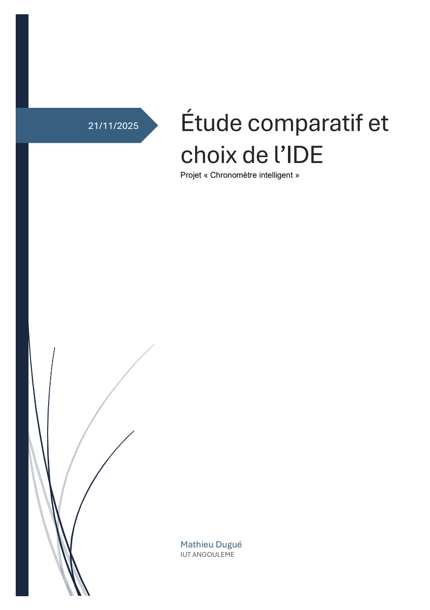 |
10/10
Jusqu'à présent, le choix de l'IDE ne se posait pas, l'environnement Arduino étant mon standard habituel. Pour ce projet, j'ai pris l'initiative d'explorer d'autres alternatives. Je considère que l'analyse comparative menée est pertinente et que la stratégie hybride adoptée (Arduino pour le prototypage, PlatformIO pour l'intégration) s'est avérée être la solution optimale |
| Rédaction du Cahier des Charges L’objectif est de définir, formaliser et valider l'ensemble des besoins, objectifs et contraintes du projet. Critères détaillés :
|
Pédagogique :
Gestion de projet Logiciel : Word Documentation : Sujet de la SAE |
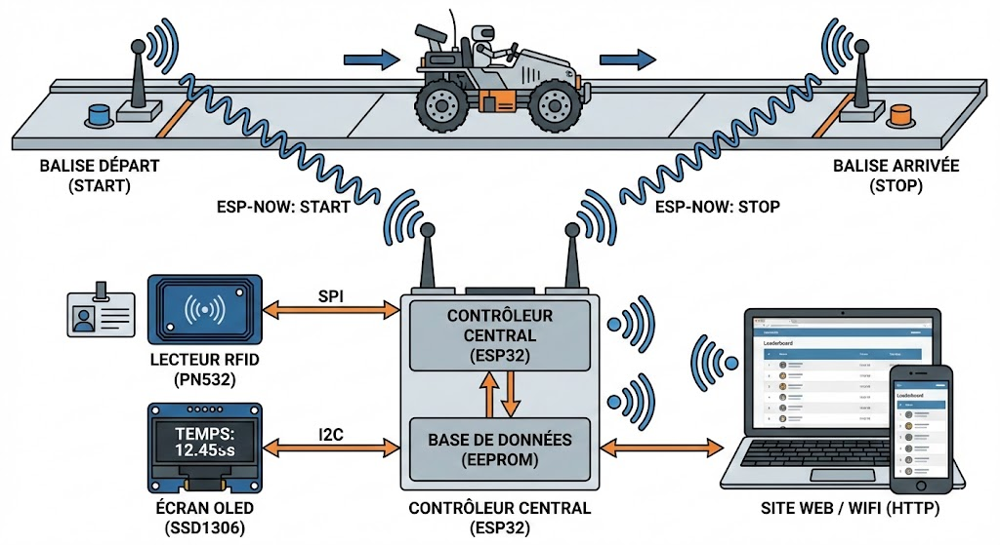 |
8/10
La rédaction du cahier des charges a été un exercice particulièrement formateur. Si la décomposition du projet en tâches unitaires a représenté une difficulté initiale, je considère cette étape comme réussie. J'ai su tirer profit des ressources à ma disposition pour structurer une feuille de route cohérente. |
| Mise en place de la communication inter-ESP (ESP-NOW) L’objectif est d'implémenter et valider la communication sans fil entre les trois modules (Central, Départ, Arrivée) pour assurer une faible latence. Validation :
|
Pédagogique :
Protocoles réseaux, ESP-NOW Logiciel : Arduino IDE Documentation : Espressif ESP-NOW API Matériels : 3x ESP32, Boutons poussoirs |
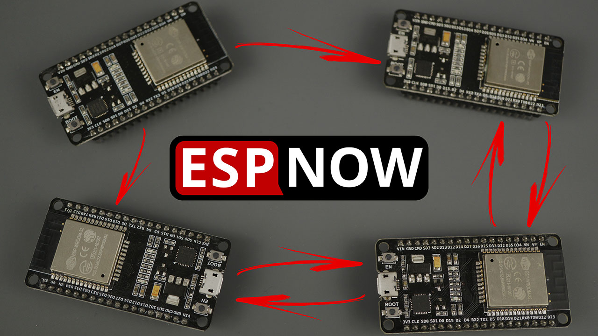 |
10/10
Cette tâche a été particulièrement enrichissante car elle m'a permis d'appréhender pour la première fois la communication sans fil inter-microcontrôleurs. La mise en œuvre réussie du protocole ESP-NOW confirme la pertinence de ce choix technique pour répondre aux contraintes de latence du projet. Je suis pleinement satisfait de la solution utilisée. |
| Étude et Choix des Capteurs de Détection L’objectif est de sélectionner la technologie la plus fiable pour les balises, capable de fonctionner indépendamment de l'éclairage ambiant de la salle. Analyse comparative :
|
Pédagogique :
Capteurs, Physique (Optique/Acoustique) Matériel : Capteur Laser (VL53L0X), Capteur Ultrasons (HC-SR04), Capteurs IR (Pololu/Flying-Fish) Documentation : Datasheet VL53L0X |
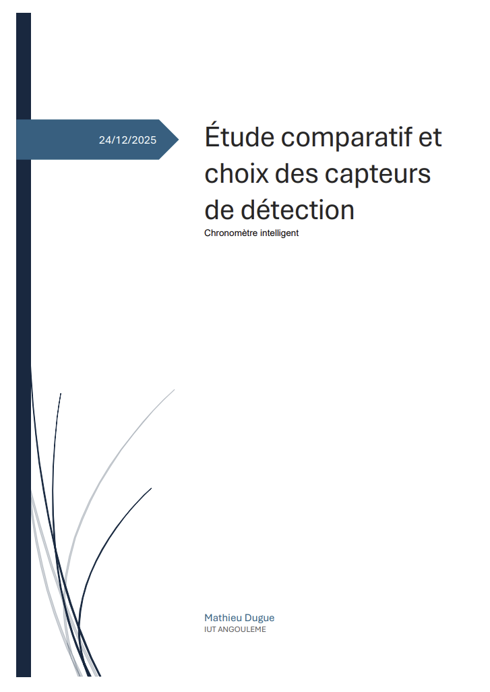 |
10/10
Cette étude technique a été importante pour la fiabilité du projet. J'ai failli opter pour un capteur IR, mais son manque de précision m'a évité beaucoup de problèmes. Le choix de prendre le Laser (VL53L0X), bien que plus coûteux (20€), est justifié par sa fiabilité. |
| Création des Balises (Départ/Arrivée)
Concevoir et programmer les modules autonomes chargés de détecter le passage des robots. Méthodologie :
|
Pédagogique :
Capteurs, Électronique Logiciel : Arduino IDE (Prototypage rapide) Documentation : Datasheet Pololu VL53Lxx (ToF) Matériels : ESP32, Capteur Laser (ToF), Boutons |

|
10/10
L'approche step by step a été bénéfique. Valider la logique de communication avec un bouton (Phase 1) avant d'intégrer le capteur IR (Phase 2) a permis d'éviter de confondre les bugs logiciels et matériels. Les balises sont fonctionnelles. |
| Étude des solutions l’alimentation par batterie des balises L’objectif est d’autonomiser les balises (Départ/Arrivée) en supprimant la dépendance USB pour garantir une autonomie d'une journée. Critères détaillés:
|
Matériel :
XIAO ESP32-S3, LiPo, Résistances Logiciel : Arduino IDE (Deep Sleep) Documentation : Datasheet ESP32-S3 |
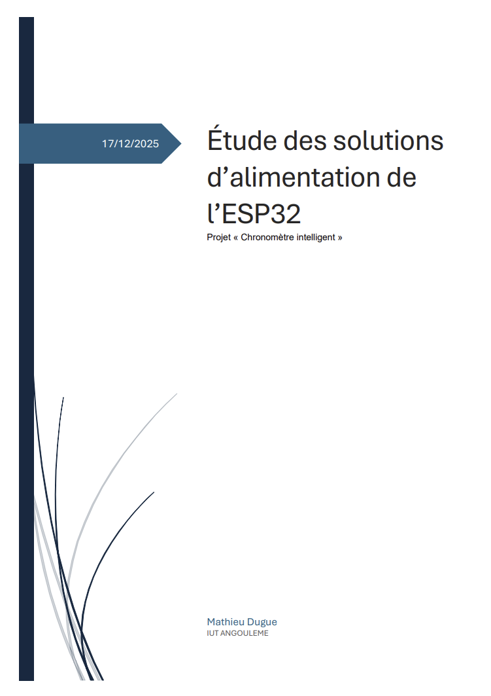 |
9/10
Cette tâche a été très instructive sur les contraintes IoT. J'ai compris que l'autonomie dépend surtout de l'efficacité du code. La mise en place de la sécurité logicielle (coupure sous 3.3V) est une réussite qui fiabilise le prototype. |
| Programmation du mode Deep Sleep L'objectif est de modifier le code des balises pour qu'elles passent la majorité du temps en veille profonde afin d'économiser la batterie. Implémentation technique :
Code source Deep Sleep |
Logiciel :
Arduino IDE Bibliothèques : esp_sleep.h, esp_now.h Matériel : XIAO ESP32S3 |
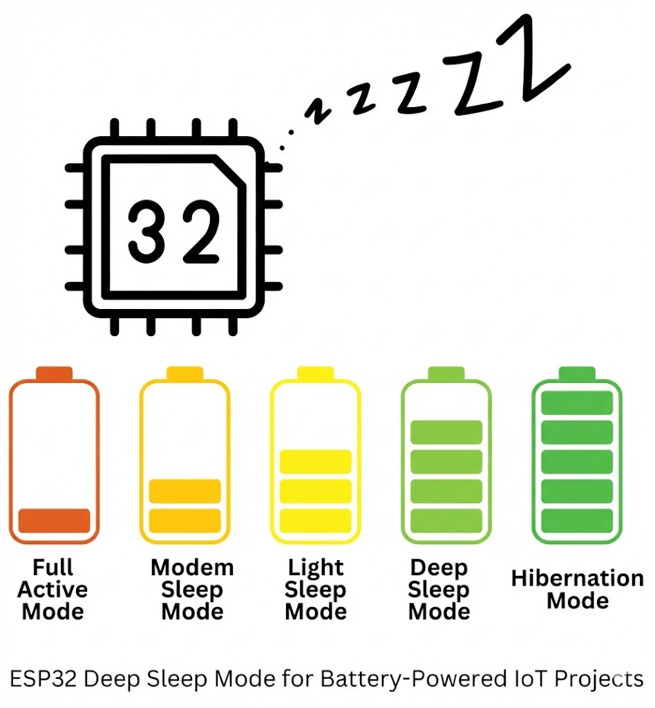 |
10/10
L'implémentation est fonctionnelle. La logique de "State Machine" stockée en mémoire RTC permet de conserver une intelligence de détection (savoir si la voiture vient de partir ou d'arriver) tout en coupant le processeur entre deux mesures. La consommation mesurée valide l'autonomie visée. |
| Création d’un PCB pour les balises départs et arrivé L’objectif est de concevoir un circuit imprimé sur KiCad pour remplacer le câblage volant et fiabiliser l'intégration physique. Critères détaillés:
Fichiers KiCad |
Logiciel :
KiCad (Schematic & PCB Editor) Matériel : Prototype sur breadboard |
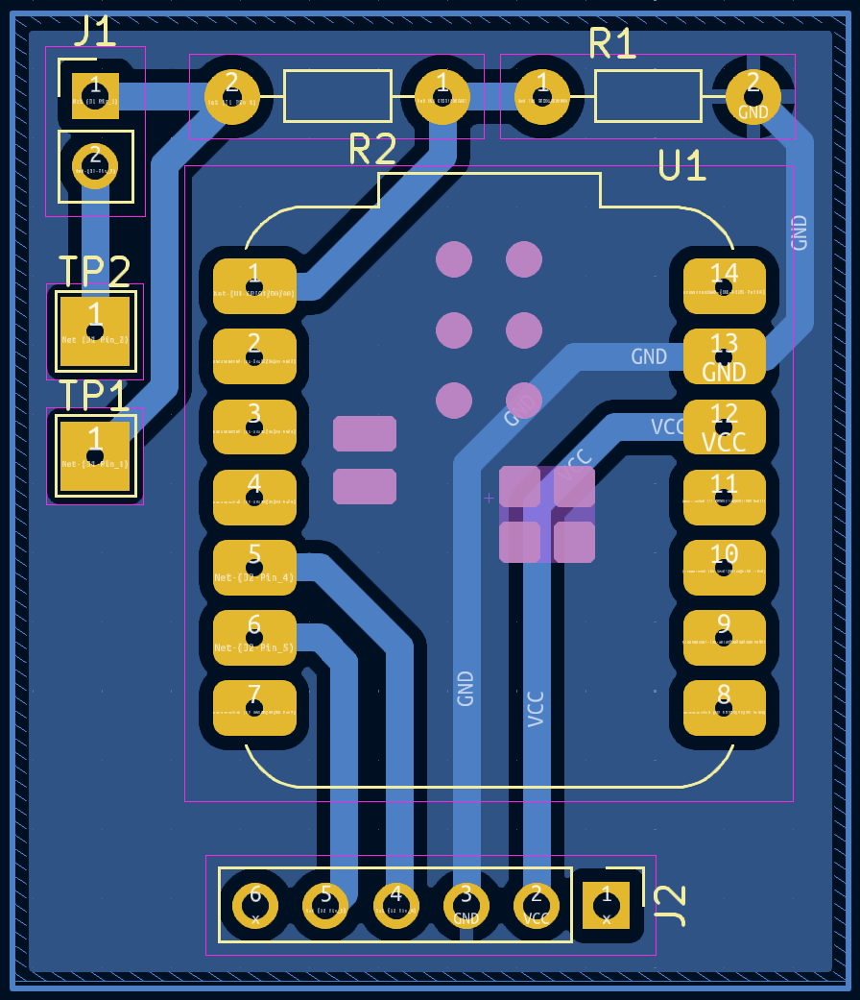  |
8/10
Le passage au PCB permet de professionnaliser le prototype. C'était une étape nécessaire pour garantir la robustesse du système face aux contraintes de déplacement sur la piste . |
| Mise en place de l’alimentation par batterie des balises L’objectif est d’autonomiser les balises (Départ/Arrivée) en supprimant la dépendance USB pour garantir une autonomie d'une journée. Méthodologie :
|
Matériel :
XIAO ESP32-S3, LiPo, Résistances Logiciel : Arduino IDE (Deep Sleep) Documentation : Datasheet ESP32-S3 |
 |
10/10
Le choix du couple LiPo + Deep Sleep est un succès total. Les tests de précision ont prouvé que la mise en veille ne perturbe pas la réactivité. L'autonomie théorique dépasse largement le besoin de la JPO. |
| Validation de la Précision et Latence L'objectif est de vérifier expérimentalement si le système respecte la contrainte de précision de 100ms malgré les latences de réveil et de transmission. Protocole de test :
|
Matériel : GBF, XIAO ESP32S3 Méthode : Comparaison Signal théorique vs Temps mesuré |
 |
10/10
Les résultats sont au-delà des espérances. Ce test a permis de comprendre que les latences de réveil des deux balises s'annulent mutuellement (symétrie), validant définitivement l'architecture ESP-NOW + Deep Sleep. |
| Mise en place et Validation du module RFID L’objectif est d'interfacer le lecteur MFRC522 avec l'ESP32 pour assurer la lecture des cartes étudiantes (IZLY). Vérification effectuée :
|
Pédagogique :
Bus SPI, Standard RFID Logiciel : Bibliothèque MFRC522 Matériels : Lecteur RC522, ESP32, LEDs |

|
10/10
Le capteur fonctionne parfaitement. La lecture est stable et le retour via le moniteur de série valide instantanément que la communication entre le module et l'ESP32 est opérationnelle. |
| Création du PCB pour le Contrôleur Central De même que pour les balises, l'objectif est de fiabiliser le poste de contrôle en remplaçant la "breadboard" par un circuit imprimé propre. Critères détaillés :
Fichiers KiCad |
Logiciel :
KiCad Matériel : ESP32 DevKit, Module RC522, Écran OLED |
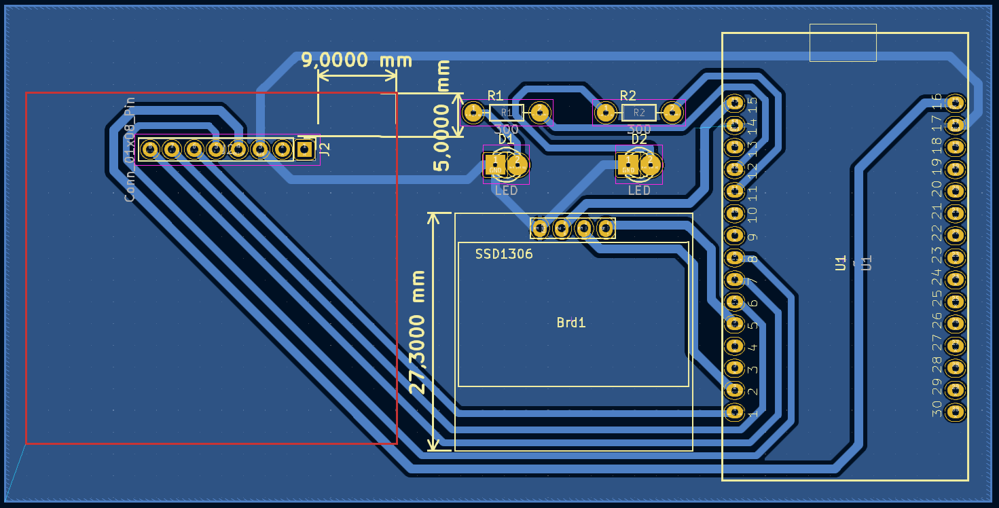 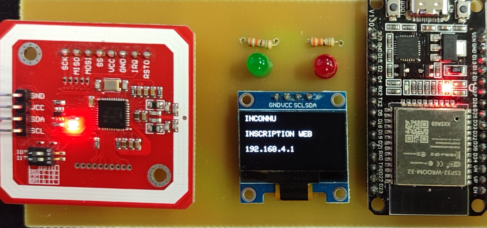 |
9/10
Ce PCB est essentiel pour la stabilité. Le lecteur RFID étant sensible aux faux contacts (ce qui planterait le bus SPI), le fait de l'avoir sur un support soudé garantit que l'identification des étudiants fonctionnera sans accroc durant toute la journée. |
| Création de la Base de Données et Gestion des Résultats Concevoir la mémoire du système pour la persistance des informations via le système de fichiers LittleFS. Phases :
Code source |
Pédagogique :
Systèmes de fichiers (LittleFS) Logiciel : Arduino IDE (avec plugin LittleFS) Documentation : Libs LittleFS / ArduinoJson Matériels : ESP32 Central |
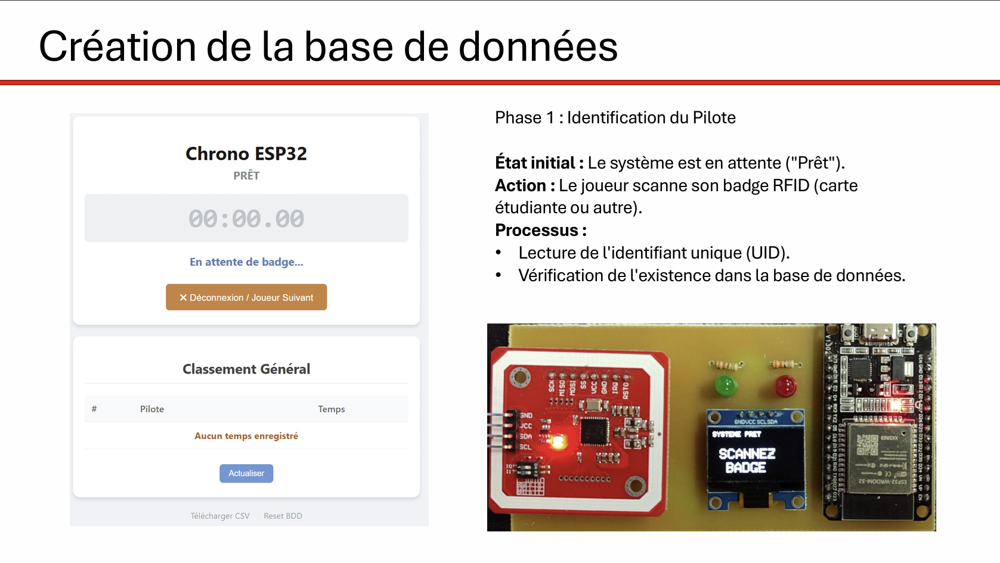 |
10/10
Contrairement à l'analyse initiale, j'ai choisi de réaliser l'intégralité du projet sous Arduino IDE. La prise en main de PlatformIO s'est avérée trop importante par rapport aux délais et aux temps que je voulais y consacrer. En restant sur un environnement maîtrisé, j'ai gagné en efficacité sur le développement, tout en réussissant à gérer le système de fichiers (LittleFS) grâce aux outils compatibles Arduino. |
| Mise en place du Démonstrateur (Portes Ouvertes) L’objectif est de présenter le projet finalisé aux visiteurs lors des Journées Portes Ouvertes (JPO) de l'IUT d'Angoulême. Le système doit être parfaitement stable et autonome. Scénario de démonstration :
|
Pédagogique :
Communication technique, Déploiement Matériels : Piste complète, Robots de démo, Stand JPO |
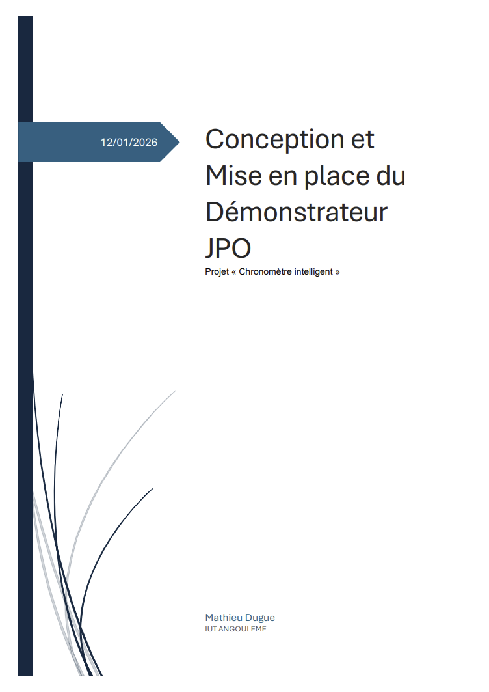 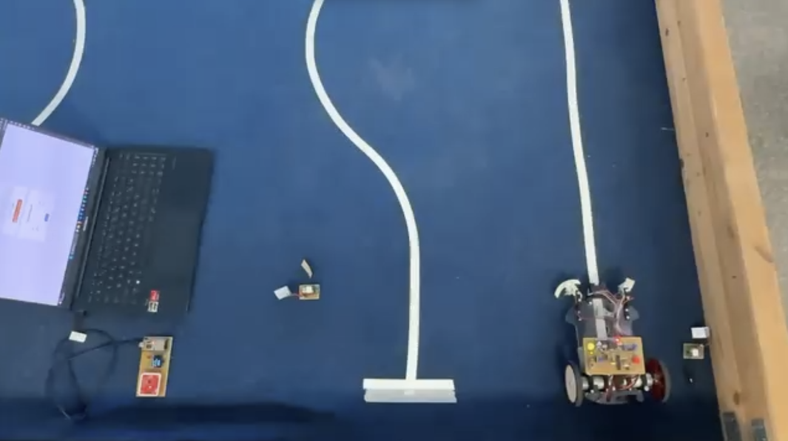 |
10/10
Le démonstrateur fonctionne parfaitement. Le système fait preuve d'une bonne fiabilité : aucune perte de connexion ESP-NOW et les batteries tiennes tenu toute la journée (validant la stratégie Deep Sleep). L'affichage du classement en temps réel fonctionne correctement. |
| BILAN ET ANALYSE PERSONNELLE | |||
|
Ce projet a été un vrai défi pour moi. Ma plus grosse réussite, c'est la performance : en combinant ESP-NOW et le mode Deep Sleep, j'ai atteint une précision de 17ms (bien mieux que les 100ms demandés dans mon cahier des charges initial) avec des balises qui tiennent toute la journée sur batterie. Côté organisation, j'ai dû faire des choix. J'ai préféré rester sur Arduino IDE plutôt que de perdre du temps à apprendre PlatformIO. Ça m'a permis de me concentrer sur les parties difficiles comme le système de fichiers (LittleFS), le RFID et la conception des cartes. Enfin, passer de la breadboard au PCB sur KiCad a rendu le projet vraiment propre et solide. Le système a tourné en continu pendant la Journée Portes Ouvertes sans aucun bug ni problème de batterie, ce qui prouve que mes choix techniques étaient les bons. |
|||